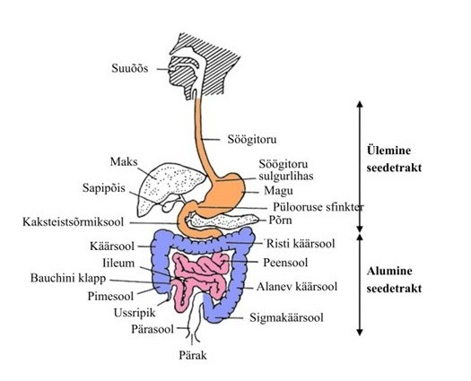

SeVeR
Seedetrakti Verejooksude Rakendus
Interaktiivne õppematerjal õendusüliõpilastele
Seedetrakti verejooksud
Seedetrakti verejooks tähendab verejooksu, mis pärineb seedetraktist ning võib ulatuda suuõõnest kuni pärakuni. Kliinilises käsitluses jaotatakse seedetrakti verejooks ülemise ja alumise seedetrakti verejooksuks. Ülemise seedetrakti alla kuuluvad söögitoru, magu ja kaksteistsõrmiksool, alumise seedetrakti alla peen- ja jämesool ning pärasool.

Seedetrakti verejooks tekib siis, kui soole või mao sisemine kaitsekiht ehk limaskest saab kahjustada ja veri pääseb soone seintest välja. Kuigi limaskesta kaitsevad füsioloogiliselt lima ja stabiilne verevarustus, võivad sellised tegurid nagu Helicobacter pylori või sagedase mittesteroidsete põletikuvastaste ainet kasutamine tekitada haavandeid, mis võivad veritsema hakata.
Seedetrakti verejooks võib olla potentsiaalselt eluohtlik, kuid varajasel avastamisel saab seedetrakti verejookse ambulatoorselt ohutult ravida. Madala seedetrakti verejooku riskiga patsientide õigeaegne tuvastamine on oluline haiglaressursside säästmiseks. Seedetrakti verejooksu täpne diagnoos sõltub haige seisundi kiirest stabiliseerimisest, esialgse riski hindamisest ja esmase kliinilise diagnoosi püstitamisest. Sellele järgneb sobiv lõplik diagnostika, mis võimaldab rakendada sobivamaid ravimeetmeid.
Seedetrakti verejooks (ingl gastrointestinal bleeding) tähendab verejooksu, mis pärineb seedetraktist ning võib ulatuda suuõõnest kuni pärakuni. Kliinilises käsitluses jaotatakse seedetrakti verejooks ülemise ja alumise seedetrakti verejooksuks. Ülemise seedetrakti alla kuuluvad söögitoru, magu ja kaksteistsõrmiksool, alumise seedetrakti alla peen- ja jämesool ning pärasool.